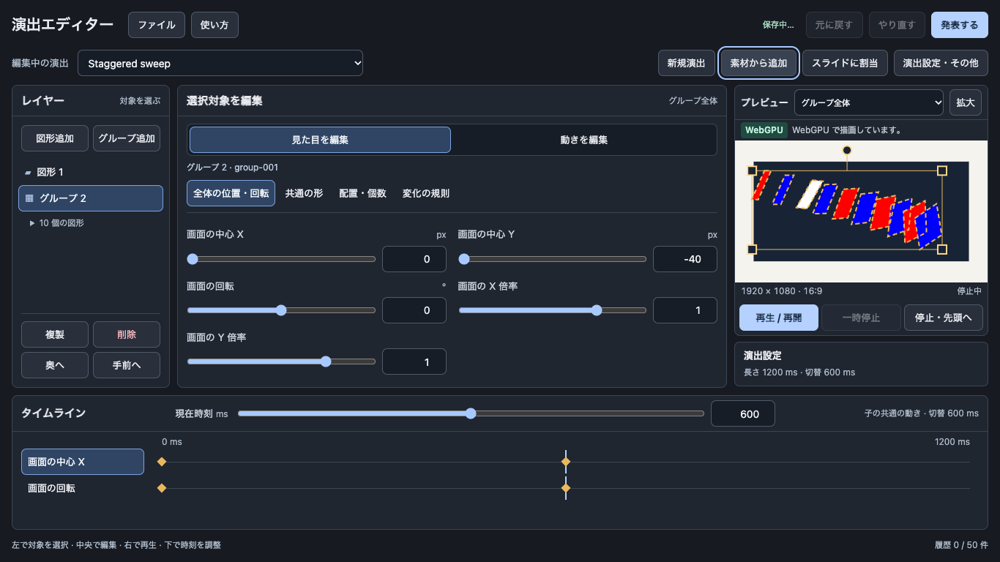

確認日: 2026-11-21（初回実装の確認は2026-11-19、UI配置改善は2026-11-20）。Phase 5で停止し、Phase 6には進んでいません。
作業前のコミットと今回の範囲
承認済みのPhase 4、発表構成とEditorプレビューの連動、cover廃止、設計・仕様・実装記録を 5dd86f9（feat: complete Phase 4 presentation and remove cover restrictions）にコミットしました。Phase 5の変更はレビュー用に未コミットで残しています。
今回はプレビュー直接操作、キー時刻のドラッグ、Undo/Redoを追加しました。Generatorや描画方式の追加、Phase 6のRadial / Random / Path、自由頂点編集は実装していません。
実装した機能と操作方法
- プレビュー上の四角形をクリックして選択、ドラッグで移動できます。重なる場合は描画順で最前面を選び、図形のない場所は選択解除します。
- 「クリックで選択」で個別の図形・Group全体を選べます。レイヤーでGroupを選んだ場合はGroup選択へ、生成子を選んだ場合は個別選択へ同期します。
- 選択枠の四隅の四角いハンドルで中心を固定した一様拡縮、上の丸いハンドルで回転できます。ハンドルの見かけの大きさはCSS pxで維持します。
- ベース編集ではShapeの基本値または生成子のOverridesを変更し、Generatorや共通アニメーションを保持します。
- キー編集では、タイムラインで明示的に選んだ対応キーだけを変更します。移動・拡縮は同時刻のX/Yキーを対で用意し、ドラッグではキーを追加しません。
- タイムラインの「位置キー追加 (X/Y)」「倍率キー追加 (X/Y)」で対を明示的に追加できます。回転キーは対象プロパティを選んで「現在時刻にキー追加」で用意します。
- タイムラインのキーをドラッグすると1ms単位で時刻を変更します。隣のキーを追い越さず、衝突する手前で止まります。
- 再生ヘッドやレールのドラッグでシークします。キーのドラッグはキーフレーム編集モードで行い、開始時に再生を一時停止します。
- 「元に戻す」「やり直す」、Ctrl/Cmd+Z、Ctrl/Cmd+Shift+Z、Ctrl/Cmd+Yに対応します。入力欄内の通常のUndoはブラウザへ任せます。
- 図形・キー・パラメータースライダーの連続ドラッグと、数値・テキストの一連の入力を一つの履歴単位にまとめます。
- Esc、pointercancel、キャプチャ喪失、直接操作中のサイズ変更・プレビュー停止では操作開始前へ戻します。ポインターが画面外へ出てもキャプチャにより操作を継続・終了できます。
意匠ライブラリ: 5パターン
ユーザーから複数の意匠制作を依頼され、「5パターンをおまかせ」と回答を受けて追加しました。既存のShape / Linear・Grid / Modifier / Overrides / Keyframe / Staggerで制作したサンプルです。Phase 6の新しい生成方式や描画機能は追加していません。
Editorの「意匠ライブラリ」に5種類の見本と「追加して再生」を用意しました。クリックすると選んだ意匠を通常のTransitionとして追加し、プレビューへスクロールして再生します。追加後は色・形状・配置・キーを編集できます。「5種類をまとめて追加」も一つのUndoで戻せます。繰り返し追加した場合はIDと名前を重複させません。
「5パターンを発表で比較」では、5演出を6枚のVueスライドで試せます。比較用Projectは独立しており、Editorへ戻ると作業中のProjectを引き継ぎます。比較だけでは既存のTransition・発表構成を変更しません。発表のフッターに、次に使う演出・再生中の演出名を表示します。
比較用の public/examples/design-patterns.json（約44kB）も用意しました。ライブラリの「比較用JSONを保存」から取得し、通常のJSON読込で使用できます。読み込みを適用すると現在のProjectを置き換える従来の確認手順を使います。個別追加・まとめて追加の場合は既存の作品と発表構成を保持します。
全て開始・終了時に図形が透明となり、単色coverを挿入しません。フレームズームは枠の動きが中心で、全画面を覆う演出にはしていません。
追加後の全3テストでは、各意匠の16ms刻み・切替時刻・代表時刻の評価、開始・終了の透明性、JSON往復、非破壊追加、ID・名前の一意性、オブジェクトの独立性、比較用JSONと生成元の一致を確認しました。Chromeの開発・本番WebGPU / WebGL2で、5種類の実描画・6枚の比較・個別再生・JSON保存・Undo/Redo・元のProjectの保持・幅320〜1600pxを確認し、ページ例外は0件です。本番ではネット切断中も5演出を再生できました。
座標変換とHit Test
プレビュー内のCSSサイズをfitCanvasで16:9に収め、左右または上下の余白を引いて1920×1080へ逆変換します。DPRはGPU画素数にだけ影響し、ポインター座標には掛けません。ドラッグ開始時に余白をクリックした場合は無視し、キャプチャ後の移動は表示領域外でも計算します。
Hit TestはRendererと同じ形状頂点とworldMatrixを使います。回転・傾斜・親の変換を反映した凸四角形に点が含まれるかを判定し、配列の末尾から探します。不透明度0の図形と面積0の退化図形は対象外です。選択専用のGPUバッファや別の描画エンジンは追加していません。
ポインター開始時はpreventScroll付きで操作面へフォーカスし、フォーカス移動で画面がスクロールして論理座標がずれることを防ぎます。
親の逆変換と画面値の書き戻し
移動はポインターの論理差分を開始時の画面上の中心へ足します。既存のdisplayValuesの逆変換で親行列を外し、子のローカルなOverrideまたはキーへ戻します。親に回転と非一様scaleがある場合でも、X/Yを対で変更して画面上の移動を一致させます。
回転は変形中心からポインターへ向かう角度の差、拡縮は中心からの距離の比から求めます。Shapeと生成子の変形中心は図形中心です。Group全体は既存の契約どおり親の原点を中心とし、金色の点と説明を表示します。Groupの選択枠は子の外接枠です。
子の画面上の回転・倍率は、Phase 3と同じく正の一様scaleの親で扱います。親が非一様・反転・0倍率の場合の子の回転・倍率は、数値編集と同じ制約を通知して拒否します。移動は可逆な親行列であれば非一様scaleでも対応します。倍率0・不安定な逆変換・非有限座標・範囲外のデータは通知し、直前の有効な状態を保ちます。
ベース値がabsoluteキーで固定されている場合も、既存の数値編集と同じ理由を表示して拒否します。編集モードや値の保存先を勝手に切り替えません。
明示的なキー選択とタイムライン
キーの選択状態はLayer・Item・Scope・Property・Timeで保持する一時UI状態です。位置の移動には位置キー、回転には回転キー、拡縮には倍率キーを選ぶ必要があります。キーがない、別の操作のキーが選ばれている、X/Yの片方しかない場合は、追加・選択方法を通知します。
Group / Child / Individualの階層を保持し、Child共通の表示値は従来どおりitem-000を基準にします。親が回転した場合の位置キーはX/Yを対で変更し、他のキー時刻・プロパティ・Child共通アニメーションを維持します。
時刻のドラッグは、開始時のキーと隣接キーを基準に下限・上限を計算します。インポートしたキー配列が未整列でも時刻順の隣接キーを使い、編集後は昇順へ整列します。1msの隙間が取れない場合は、数値入力で調整する案内を出します。既存のEasing編集と時刻の数値入力は継続できます。再生ヘッドの変更はProjectや履歴に入りません。
Undo/Redoの履歴と保存
履歴は検証済みProjectのJSONスナップショットだけを保持します。選択・モード・キーの選択・再生位置・DOM・GPU参照は含みません。最大50スナップショット、合計4 Mi文字（UTF-16の文字列領域として約8 MiBが上限）で古い履歴から削除します。現在のProjectと操作中の一時データはこの履歴容量の集計には含みません。
操作開始 → 現在のProjectを退避、再生を一時停止
→ pointermoveごとに複製・検証 → プレビューへ即時反映
→ 操作完了 → 開始前を履歴へ一度だけ追加 → 最新Projectを自動保存
→ キャンセル → 開始前へ復帰、履歴は追加しない
Undo → 直前のProjectへ復帰 → Redo側に現在値を保存 → 自動保存
Redo → 再適用 → 自動保存
Undo後の新規編集 → Redo履歴を破棄
操作には識別子を割り当て、前の入力欄の遅いblur・終了イベントが次のドラッグを確定しないようにしています。直接操作の差分は開始時のProjectに対して適用し、ポインター移動回数による二重加算を防ぎます。操作途中の状態は自動保存へ渡さず、確定後の状態だけを保存します。pagehideや画面を離れる際は、未確定の操作を開始前へ戻してから保存をflushします。
Undo/Redoで選択中のTransition・Layer・キーがなくなった場合は、UIの参照も整理します。JSON適用・保存データの再取得は新しい起点として履歴をクリアします。再読込とEditorの再マウントでも履歴はリセットし、Project自体は復元します。
処理フローとGPUへの影響
- ポインター座標を論理座標へ変換し、評価済みの四角形から対象を選びます。
- 操作開始時のProject・画面値・変形中心を固定します。
- ポインターの移動から表示したい画面値を計算し、既存の逆変換とProject更新APIで書き戻します。
- 既存Evaluatorが時刻の図形状態を計算し、既存Rendererが同じMesh・Geometry・Materialを更新します。
- 選択枠・ハンドルはSVGで重ね、追加のGPU Canvasを作りません。
- 終了時に履歴を一件確定し、キャンセル・アンマウント時にキャプチャと一時状態を解除します。
描画方式、Three.jsのAPI、Domain / Evaluatorの依存関係は変更していません。Phase 4で廃止したcoverも復活させていません。
追加・変更したファイル
追加依存パッケージはありません。
自動テストとビルド結果
npm test: 98件成功。既存82件にPhase 5の13件、意匠サンプル関連3件を追加しました。npm run build: 成功。67 modules、JS約1008 kB、gzip約286 kB。従来からの500 kB超のチャンク警告は残っています。- Lint: 設定がないため未実行。
新規テストはCSS座標と論理座標の往復・余白、描画順と透明/退化図形、非一様な親での移動、Generator変更後のOverride保持、回転・倍率の差分、非可逆な変換の拒否、キー編集の保存先、時刻ドラッグの衝突・境界、Undo/Redo・Redo破棄・履歴上限・容量・Importリセット、ドラッグ一件化とキャンセル・pagehide・保存、通知によるドラッグ中のレイアウト変化防止、未整列キーの隣接判定、遅い入力イベントによる新しい操作の誤終了防止を確認しています。
実ブラウザの検証結果
Chrome 158.0.8127.36のヘッドレス実行で確認しました。Playwrightは一時ディレクトリの検証用環境を使い、プロジェクト依存には追加していません。
上記の実行で、未処理のページ例外は0件でした。
動作確認の手順と実行場所
すべてのコマンドの実行場所は リポジトリのルート です。
npm test
npm run build
npm run preview -- --host 127.0.0.1
- EditorでShapeまたはGroupを用意し、プレビュー上の図形をクリックします。Groupの子と全体は選択モードで切り替えます。
- 本体をドラッグして移動、四隅の四角で一様拡縮、丸で回転します。「元に戻す」「やり直す」で操作全体を往復できます。
- キーフレーム編集へ切り替え、タイムラインで位置・回転・倍率のキーを明示的に作成して選択します。位置・倍率はX/Yを対にします。
- 選択キーの図形を操作し、キーのマーカーをドラッグして時刻を変更します。再生ヘッドのドラッグはシークのみです。
- Escやpointercancel、プレビュー停止で途中の操作を取り消し、履歴が増えないことを確認します。
- 保存後に再読込し、Projectが復元されることを確認します。履歴・再生位置・選択はリセットします。
- 「発表する」で既存の演出を確認します。cover設定は不要です。
意匠の配布JSONを再生成する場合は リポジトリのルート で実行します。
node scripts/build-design-examples.mjs
記録の再生成も リポジトリのルート で実行します。
npm run docs:report
既知の制約と次工程への引き継ぎ
- 直接拡縮は中心を固定した一様倍率です。軸ごとの倍率は既存の数値入力を使います。
- 子の回転・倍率の直接操作は正の一様scaleの親に対応します。非一様・反転・0倍率の親では原因を表示し、Phase 3と同じ制約を維持します。
- 画面外にある図形・ハンドルは画面内へ戻すか数値入力で調整します。ズーム・パンは追加していません。
- 時刻ドラッグは1ms刻み、隣のキーを追い越しません。より細かい時刻や順序変更は数値入力で行えます。
- Undo/RedoはこのEditorの起動中のみです。再読込・再マウント・JSON適用・保存データ再取得で履歴をクリアします。容量上限で50件より少なくなる場合があります。
- Safari・Firefox・実機タッチ操作・ペン入力は未検証です。ChromeでのDPR 2と小画面、pointercancelは検証しました。
- Phase 6へ進んでいません。
完了条件
- ✓プレビュー上で形状を選択。
- ✓移動・回転・一様拡縮をポインターで編集。
- ✓Group子の移動で親の変換を逆算。
- ✓ベース編集と明示的なキー編集の保存先が一貫。
- ✓キーの時刻と再生ヘッドをドラッグ。
- ✓一つのドラッグをUndo/Redo一回にまとめる。
- ✓保存・復元、既存Presentation再生とcover廃止を維持。
- ✓自動テスト・ビルド・ブラウザ確認の結果を記録。
- ✓Phase 6へ進まず停止。
UI / UX 改善検討 — 2026-11-20・実装前の記録
この節は実装前の検討記録です。回答受領後の変更と検証は、後述の「UI / UX改善の実装」に記載しています。
ユーザーから「何をどう操作するのかわかりにくい」「できればスクロールなし」「プレビューは4分の1のサイズでよい」という意見を受けた検討記録です。今回作成したのは現状の調査、配置案、回答フォームです。アプリ本体・合意済みの設計・仕様は変更していません。Phase 6の実装にも進んでいません。
実画面で確認した問題
新しいブラウザコンテキストで初期状態のEditorを開き、Chromeのヘッドレス実行で測定しました。単位はCSS px、Yはページ先頭からの位置です。保存済みProjectや開閉状態が違う場合は数値も変わります。
コードでも次の構造を確認しました。
EditorView.vue：ヘッダー、演出の選択、ライブラリ、演出設定、発表構成の後に編集領域を表示。ライブラリ追加後にプレビューへスクロールする処理もある。editor.css：タイムラインはプレビュー列の下に配置。画面全体の高さを制限せず、プレビューの説明・GPU状態・再生・シーク・履歴説明が縦に重なる。幅1120px以下ではプロパティも下段へ移る。PropertyPanel.vue：図形の基本値、Template、Generator、Modifierを同じ縦の領域で編集。ベース／キーフレームの切替は右、実際のキー編集は下のタイムラインに分かれる。App.vue、LayerPanel.vue：Phase番号、Shape / Group、内部IDが前面に出る。「どの図形の何を編集するか」より開発上の分類を先に理解する必要がある。
配置案 — 小さいプレビューと常時見えるタイムライン
左で対象を選び、中央で編集し、右上で確認し、下で時間を調整する配置を提案します。レイヤー・プレビュー・プロパティ・タイムラインの4領域は維持し、位置と面積の配分を変えます。基本設計6章の大きな中央プレビューを置く図からの変更案なので、合意後に設計図も更新する想定です。
以下は1440 × 900の画面を想定した配置図です。図内の図形・数値は説明用であり、動作するEditorではありません。
配置の検討図。レポート上では縮小表示しています。製品の新しい画面は未実装です。
プレビューの「4分の1」とスクロールの扱い
実測した1440 × 900のCanvasは約766 × 431で、Canvasだけですでに画面面積の約25.5%です。一方、見出し・説明・状態・操作まで含むプレビューパネルは約768 × 859あります。縮小と同時に、その周辺の縦積みを整理する必要があります。
上の図は現在のCanvasの幅と高さをそれぞれ約半分にし、面積を約1/4（384 × 216）にする案です。1920 × 1080の論理座標と16:9は維持します。「4分の1」が画面面積の意味なら、この案より大きい表示に調整します。プレビューを小さくすると細かい図形の選択は難しくなるので、レイヤー選択と数値入力を主導線にし、必要時だけ拡大して元の配置へ戻れる操作を候補にします。
スクロールについては、通常の選択・数値変更・再生・シーク・キー編集でページをスクロールしないことを第一目標にします。多数のレイヤー、Modifier、キーがある場合は、一覧の中だけスクロールする案が現実的です。完全にスクロールをなくしたい場合は、一覧もページ切替にする必要があり、項目を一覧しにくくなるため選択を分けています。
検討時の回答フォーム（回答受領済み）
操作導線の整理
「全体の位置・回転」はGroup全体、「共通の形」「配置・個数」「変化の規則」はGroupを選んだときに表示する案です。子図形を選んだ場合は、その図形の見た目と個別設定の解除に絞ります。Group / Child / Individualの保存先・優先順位や、明示操作なしでキーを追加しないルールは維持します。
ファイルの読込・出力は「ファイル」、複製・削除は対象の「その他」、Phase別検証画面は「開発用サンプル」から開く案です。自動保存状態、失敗時の復旧、WebGL 2へのフォールバック表示は確認できる場所を確保します。説明文・履歴件数・GPU詳細は必要時に開き、エラーや入力できない理由は該当操作の近くへ表示します。
実装する場合の範囲と確認基準
これはPhase 5までのEditorの改善案です。新しい生成方式・描画方式・保存形式を追加する計画ではありません。配置の変更に合意した後、基本設計6章の図、F-06の操作説明、Phase 5のUI確認項目へ反映する想定です。
- 最初に管理操作とライブラリの表示位置を整理し、画面の高さに収まる編集領域を作る。
- レイヤー・小型プレビュー・編集欄・タイムラインを配置し、見た目／動きの切替と対象表示を統一する。
- ライブラリ、発表構成、読込確認などを開閉しても、編集中のProject・選択・再生位置・Undo履歴を保つ。
- ブラウザ表示領域1366 × 768を仮の最小基準にし、1440 × 900、1920 × 1080でも通常操作をページの縦横スクロールなしで完了できるか確認する。これは未検証の目標値。ブラウザのツールバーを除いた表示領域で判定する。
- 多数のレイヤー・Modifier・キー、Group全体と子、ベースとキー、再生中と停止中、保存失敗・読込確認の状態も確認する。小さい画面や文字拡大時は読みやすさと操作の到達性を優先し、タブ切替などの代替配置を検討する。
GPU側の処理は、これまでどおり「Projectと時刻から図形を計算 → 描画状態を更新 → Canvasへ描画」です。表示を小さくしても論理座標は縮めず、画面サイズへの当てはめとポインター座標の逆変換を使います。実装時はCanvasリサイズ中の操作取消・選択枠・ハンドル・GPUリソースの後始末も回帰確認が必要です。
今回の変更ファイルと検証
docs/phases/phase-5-result.md：調査結果・未実装の配置案・質問・確認基準を追記した原本。scripts/build-implementation-report.mjs：原本内の明示したHTMLブロックを同じ位置へ出力。図とフォームを原本で管理するための変更。scripts/implementation-report.template.html：配置図・フォームの表示、回答テキストの作成、コピーと手動コピーへの対応。docs/implementation-report.html：リポジトリのルートで npm run docs:report を実行して再生成する閲覧用HTML。
現状のアプリの画面位置は実ブラウザで測定済みです。提案した製品レイアウトの画面内収まり・操作性・GPU挙動は未実装のため未検証です。冒頭の98件成功とビルド成功はPhase 5実装時の過去の結果です。
今回、次の確認を実施しました。
npm run docs:report：成功。6 Phaseの記録とPhase 6の「未着手」枠を維持してHTMLを生成。node --check scripts/build-implementation-report.mjs：成功。- ChromeでローカルHTMLを直接開く検証：配置図の表示、回答の初期値、選択・表示領域・自由記述の反映を確認。
- コピー機能：Clipboard API成功時の処理と、APIがない場合に回答欄を選択して手動コピーする処理をそれぞれ確認。成功時の分岐はAPIを差し替えて検証しており、OSのクリップボードへの実書込は未検証。
- フォームの送信抑止、幅320・390・768・1366・1440pxでレポート全体の横はみ出しなし、ページ例外0件、HTTP通信0件を確認。
- 既存レポートの回帰確認：全6 Phaseの見出し・表・コード・チェック項目の保持、アンカーとIDの一意性、390px表示、印刷ボタン、全PhaseのPDF生成を確認。
- アプリのユニットテスト・製品ビルド：今回は未実行。アプリ本体のコード変更がなく、検証対象を文書生成とフォームに限定したため。提案レイアウトの機能確認とは区別する。
再生成と構文確認の実行場所はリポジトリのルートです。
npm run docs:report
node --check scripts/build-implementation-report.mjs
ブラウザ確認は /private/tmp/gen-slide-phase1-tools の既存Playwright環境と一時検証スクリプトを使いました。プロジェクトへの依存追加はありません。HTMLを直接開き「UI / UX改善案」へ移動し、選択・補足を変更して「回答をコピー」を押すことで手動確認もできます。
UI / UX改善の実装 — UI-UX-01・2026-11-20
受領した回答と反映範囲
質問ID UI-UX-01 に対し、ユーザーから「現状Canvasの面積約1/4（幅・高さ約半分）」「ページのスクロールなし、項目が多い一覧内のみ許容」「ひとまず1366×768を基準」「補足なし」と回答を受け、配置図の方向で実装しました。Phase 5までのEditorのUI改善として扱い、Phase 6へは進んでいません。
左で対象を選択、中央で値やキーを編集、右上で動きを確認、下で時刻を調整する配置です。管理操作とライブラリを編集領域の上から移し、通常操作の4領域を画面内へ収めました。

本番ビルドの実画面。画像をクリックすると原寸で開きます。プレビューは論理座標1920×1080を維持した縮小表示です。
実装した機能と操作導線
- 上部には演出選択、新規作成、素材追加、スライド割当、演出設定を配置。ファイル操作と使い方はヘッダーから開きます。
- 中央の「見た目を編集／動きを編集」で基本値とキー編集を切り替えます。Groupでは「全体の位置・回転／共通の形／配置・個数／変化の規則」、単体・子では「位置・回転／形・色」に分けました。
- キーの追加、時刻・値・補間の入力は中央へ移し、選択した対象と動きの階層を表示します。下部にはトラックとシークを常時表示。キーやトラックをクリックすると、中央の動き編集へ進めます。
- プレビューを約1/4面積へ縮小。レイヤーの選択名を種類と順番へ変更し、内部IDは補助情報にしました。小さい図形は左のレイヤーと数値入力でも編集できます。
- 「拡大／縮小」でプレビュー列の幅を切替。拡大時も再生操作を画面内に保ち、同じ描画コンポーネントを使います。
- ライブラリ・発表構成・ファイル・設定・ガイドは、必要時にダイアログを開きます。閉じるボタンとEscで戻れ、通常の開閉はProject・選択・時刻・履歴を保持します。開く際は再生を一時停止します。
- JSONの確認待ちはダイアログを閉じても保持し、下部から確認へ戻れます。読込の検証、置き換え前の確認、保存失敗時の保護・再試行は従来の処理を使用します。
- GPUバックエンドは小型プレビューの上に表示。再生停止とGPU描画停止を区別し、後者は「使い方」から操作します。Phase別検証画面も同じガイド内の選択欄へ移しました。
- 1366×768、1440×900、1920×1080でページスクロールなしを確認。多数のレイヤー・プロパティ・キーやダイアログ内の長い一覧は領域内でスクロールします。
主な設計判断と処理フロー
基準はブラウザの表示領域です。通常のデスクトップではEditorを 100dvh の高さにし、ヘッダー・管理操作・状態欄を除いた領域をGridで配分します。下部のタイムラインを184pxで確保し、上段の各一覧にスクロールを持たせることで、ページ全体が伸びるのを防ぎます。
1366×768でCanvasは約345×194、1440×900では約382×215です。従来の約692×389、766×431と比べ、Canvas面積はそれぞれ約1/4です。16:9と1920×1080の論理座標は維持し、ウィンドウのサイズに応じて縮小率だけを変えます。
中央のキー編集にはVue 3.5の Teleport defer を利用しました。同じTimelinePanelがトラック選択・キードラッグ・キー入力を管理し、入力欄だけ中央へ表示します。インストール済みVue 3.5.45のランタイムで defer の実装を確認し、ブラウザで初期表示・更新・画面離脱まで検証しました。初期化順によるターゲット未検出はこの指定で解消しています。
GPUの処理は「Projectと時刻から図形を評価 → 描画状態を更新 → Canvasへ描画」のままです。Canvasの物理的な表示サイズだけが小さくなり、既存の座標変換を使ってポインター位置を論理座標へ戻します。拡大・縮小でもRendererを増やさず、リサイズ時の操作取消とアンマウント時のGPU解放を既存処理へ任せています。
Domain、Evaluator、保存形式、Three.js APIへの変更はありません。依存パッケージの追加もありません。
追加・変更したファイル
動作確認の手順とコマンド
実行場所はすべてリポジトリのルートです。
npm test
npm run build
npm run dev -- --host 127.0.0.1
- 表示領域1366×768でEditorを開き、レイヤー・編集欄・再生・タイムラインが同時に見えることを確認します。
- 左で図形またはグループを選び、「見た目を編集」の項目を切替。ドラッグ、回転、拡縮と「元に戻す／やり直す」を確認します。
- 「動きを編集」で階層と項目を選び、現在時刻にキーを明示的に追加します。下のキーを選び、中央で時刻・値・補間を変更します。
- 素材・設定・ファイル・割当・ガイドを開いて閉じ、選択・時刻・履歴が維持されることを確認します。
- JSONの読込前の確認、適用後の保存と再読込、素材追加、スライド割当、「発表する」での演出再生を確認します。
- 多い一覧を領域内でスクロールし、ページ全体の位置やプレビューの座標がずれないことを確認します。
本番版は、同じリポジトリのルートで次を実行して確認できます。
npm run preview -- --host 127.0.0.1
npm run docs:report
HTMLレポートを直接開く場合は、Finderで docs/implementation-report.html をダブルクリックし、上部の「UI / UX改善の実装結果を見る」から移動します。
検証結果・制約
npm test：98件成功。既存のDomain・Evaluator・直接操作・履歴・保存・Presentationの検証を再実行。npm run build：成功。67 modules、JS約1016 kB、gzip約289 kB。従来からの500 kB超のチャンク警告は残っています。- 開発版Chrome、DPR 2、WebGPU / WebGL2：1366×768・1440×900・1920×1080でページの縦横スクロールなし。1366×768では再生・基本値編集・タイムラインが画面内に入り、通常の位置・回転・倍率と右のプレビューは内部スクロールも不要。
- 開発版の編集回帰：移動・回転・拡縮、Undo/Redo、個別キーの値と時刻・補間、キーの隣接衝突防止、親変換下の子の移動、Generator変更後のOverride保持、Child共通キーを確認。
- ライブラリ・設定・ファイル・割当・ガイドの通常開閉：Project、選択対象、再生位置、履歴の保持を確認。
- 40個の生成図形とレイヤー一覧内スクロール、拡大・縮小時の表示、幅768・390・320pxでの横はみ出しなしと操作への到達性、スライド背景付きプレビューを確認。
- JSONの不正データ拒否、検証後の適用、履歴リセット、素材追加して再生、保存後の再読込、既存Presentationのスライド切替とEditorへの復帰を確認。
- 本番版Chrome、WebGPU / WebGL2：1366×768での配置、中央のキー編集欄、ダイアログ開閉後の時刻保持、Presentationの再生とEditorへの復帰を確認。実画面のCanvasは345×194.0625 CSS px。
- ブラウザ確認中の未処理ページ例外とVue警告は0件。ブラウザ確認は一時ディレクトリの既存Playwrightを使い、プロジェクト依存には追加していません。
npm run docs:report、生成スクリプトの構文確認、git diff --check：成功。HTMLを直接開き、画像の読込、過去6 Phaseの見出し・表・コード・チェック項目、アンカーの一意性、小画面表示、印刷ボタンとPDF生成を確認。検討時の回答フォームも、回答変更・コピー成功時の処理・Clipboard APIがない場合の手動コピーを確認。ページ例外・HTTP通信とも0件。
- 幅1100px以下、または高さ680px未満では読みやすさと到達性を優先し、縦配置とページスクロールに切り替えます。基準サイズ以上でブラウザの文字を大きくした場合も、実効表示領域が小さくなることがあります。
- 共通の形や多数の規則・キーなど、項目が多い編集欄では内部スクロールが残ります。通常の位置・回転・倍率は1366×768で一覧の内部スクロールなしに収まります。
- 小型プレビューで細かい図形やハンドルが密集するときは、拡大またはレイヤー選択・数値入力を使います。ズーム・パンや新しい変形方法は追加していません。
- Safari・Firefox、実機のタッチ・ペン、ブラウザの大きな文字拡大は未検証です。
- Phase 6へは進んでいません。
JSON読込を既存作品への追加方式へ変更 — 2026-11-21
変更理由と新しい動作
ユーザーから「JSONを読み込むと既存が消える。追加形式にしたい」と指示を受け、読込の確定処理を変更しました。以前はProject全体を読込内容で置き換えていました。今後は既存の演出・レイヤー・スライドを保持し、読込ファイルの演出とスライドをそれぞれの末尾へ追加します。Phase 5までの保存・編集操作の修正であり、Phase 6へは進んでいません。
「ファイル → JSON読込」でファイルを選ぶと、追加予定の演出・スライドの件数を表示します。「このJSONを追加」で確定し、キャンセルや確認画面を閉じただけでは作品を変更しません。確認待ちは従来どおり画面下部から再開できます。
追加全体を履歴1操作として記録し、「元に戻す」で追加分を取り消し、「やり直す」で再追加できます。読込前の履歴も保持します。演出が含まれるときは最初に追加した演出を選択しますが、既存作品は演出選択欄とスライド割当画面に残ります。演出のないスライドだけの追加や、空のJSONでは編集中の演出・時刻を維持します。
IDと参照・保存の扱い
- Transition・Layer・SlideのIDはProject全体で一意です。取り込み側のIDが衝突した場合だけ、新しいIDを割り当てます。衝突していないIDは維持します。
- 取り込み側の全IDも採番前に予約し、衝突解消でファイル内の別のIDを奪わないようにします。
- 追加スライドの
transitionId は、追加された演出の新しいIDへ対応させます。既存スライドの設定と並び順は変更しません。
- Group内の
item-xxx、Override、Child・Individualのキー、旧coverを含む演出データを保持します。入力ファイルのデータも変更しません。
- 追加処理は既存の編集トランザクションを使います。入力と合成後のProjectの検証に成功した場合だけ確定し、失敗時は一部も反映しません。UIは失敗理由と確認画面を保持します。
- 追加後、Undo後、Redo後のProjectはいずれも通常の自動保存対象です。保存データの復元失敗で上書きを保留している場合は、その保護をJSON追加だけで解除しません。
描画処理は従来どおり、選択した演出と時刻から図形を評価してRendererへ渡します。GPUの初期化・描画方式・座標変換は変更していません。保存形式と依存パッケージにも変更はありません。
追加・変更したファイル
確認手順と結果
実行場所はすべてリポジトリのルートです。
npm test
npm run build
npm run preview -- --host 127.0.0.1
npm run docs:report
- 既存の作品で演出名や図形を編集し、JSONを書き出します。
- 「ファイル → JSON読込」でそのJSONを選び、追加件数と説明を確認します。キャンセル時に作品が変わらないことも確認します。
- 「このJSONを追加」で確定。既存の演出とスライドが残り、追加分が末尾にあることを確認します。
- 「元に戻す」で追加分だけが消え、「やり直す」で復帰することを確認します。
- 同じJSONを再度追加し、ID重複が起きず、スライドが追加された演出を参照して再生できることを確認します。
- JSON出力とページ再読込でも、既存と追加後の両方を保持することを確認します。
npm test：105件成功。既存98件を含み、追加方式の重要な境界を7件追加して確認しました。npm run build：成功。67 modules、JS約1017 kB、gzip約290 kB。従来からの500 kB超のチャンク警告は残っています。- 本番版Chrome、WebGPU / WebGL2で確認：追加前の確認とキャンセル、確認待ちの再開、既存作品と履歴の保持、IDと演出参照の対応、Undo/Redo、同じJSONの繰り返し追加、JSON出力、再読込、不正JSON時の保護が成功。
- 既存と追加したスライドを実際に発表モードで再生し、追加された演出の再生とEditorへの復帰を確認。1366×768でページの縦横スクロールなし、未処理のページ例外0件。
npm run docs:report、生成スクリプトの構文確認、git diff --check：成功。HTMLを直接開き、最新105件の集計、今回の変更へのリンク、全6 Phaseの見出し・表・コード・チェック項目の保持、アンカーの一意性、390px表示、印刷ボタンとPDF生成を確認。ページ例外・HTTP通信0件。- ブラウザの確認は一時ディレクトリの既存Playwright環境を使い、実ユーザーのブラウザ保存領域にはアクセスしていません。Safari・Firefox、巨大なJSONでの性能・実機タッチ操作は未検証です。
制約と既存の作品について
同じJSONを繰り返し読み込むと、それぞれ別のコピーとして追加します。同じ名前も保持するため、必要に応じて演出設定で名前を変更できます。保存容量や履歴件数の上限は従来どおりです。
この修正は今後の読込で既存作品を保持するためのものです。以前の方式ですでに置き換えられ、保存済みの過去作品を自動復元する機能は含みません。以前に書き出したJSONがあれば、新しい追加方式で取り込めます。
インポート用の見本JSON — 2026-11-21
ユーザーの依頼により、追加インポートを試せる public/examples/import-demo.json を作成しました。3演出・4スライド、約19 kBのProject JSONです。既存の意匠データを色違いにして使い、生成方式や編集機能は追加していません。
インポート用JSON（import-demo.json）を保存
スライドはタイトル → コンテンツ → コンテンツ → クロージングの4枚です。最初の3枚に上記の演出を順番に設定し、最後の1枚は演出なしにしています。登録済みのVueスライドを利用するため、本文の内容は既存スライドと共通です。
使い方と変更ファイル
- アプリの「ファイル → JSON読込」で、リポジトリ内の
public/examples/import-demo.json を選びます。
- 3演出・4スライドを追加する確認が出たら「このJSONを追加」で確定します。
- 演出選択欄の「追加サンプル」で始まる演出を選び、「再生 / 再開」で動きを確認します。開始時点は透明なので、停止中の0msだけでは図形が見えません。
- 「スライドに割当」では追加された4枚と演出の対応、「発表する」では実際のスライド切替を確認できます。不要なら追加直後に「元に戻す」で追加全体を取り消せます。
追加ファイルは public/examples/import-demo.json。README.md に入口を追記し、この原本から docs/implementation-report.html を再生成しました。既存のアプリ実装には変更を加えていません。Phase 6へも進んでいません。
検証結果と実行場所
検証コマンドの実行場所はリポジトリのルートです。Node.jsでファイルを読み込み、既存の parseProject、evaluateTransition、appendProject、applyProjectEdit を使って検証しました。
- JSONのスキーマ・全IDの一意性・スライドの演出参照を検証。
- 3演出を合計192時点で評価し、途中の500msで図形が表示対象になることを確認。
- 初期Projectへ同じ見本を2回追加し、既存データと入力JSONの非破壊、IDの一意性、追加スライドの演出参照、演出数・スライド数の増加を確認。
npm run build と npm run docs:report：成功。本番用 dist/examples/import-demo.json と原本が一致すること、HTML内の見本へのリンクを確認。従来からの500 kB超のチャンク警告は残っています。- この色違いJSON自体の実ブラウザでの見た目は今回は未検証。前節で検証した追加処理と、既存の意匠ファクトリーを利用しています。アプリコードの変更がないため、ユニットテストの再実行・新規追加は行っていません。
四角形の基本4パターンをJSON化 — 2026-11-21
ユーザーと整理したA〜Dの表をもとに、各パターンを1演出とした public/examples/basic-four-patterns.json を作成しました。4演出・5スライドのProject JSONです。すべてPhase 5までのGrid / Linear、色の規則、Overrides、キーフレームで構成し、アプリ本体への新機能やPhase 6の実装は追加していません。
基本4パターンのインポート用JSONを保存
Aの波は、行・列に応じて各図形のキー時刻をずらして作っています。Dは組立位置を基本値とし、そこからの移動差分・回転・倍率をキーへ保存します。800msと2350msで同じ形に戻るよう設計しました。実行時に新しい波の計算機能や頂点操作を要求しない、既存の編集機能で変更可能なデータです。
スライドはタイトル → コンテンツ3枚 → クロージングの5枚。最初の4枚から次へ進む際に、A → B → C → Dを順に再生します。本文には登録済みのVueスライドを使います。演出は開始・終了で透明になり、スライドを残す構成です。
ファイルと利用手順
public/examples/basic-four-patterns.json：インポートする原本。約254 KiB。scripts/build-basic-pattern-examples.mjs：図形・キーフレームを組み立ててJSONを再生成するスクリプト。ブラウザからは実行しません。README.md：4パターンへのリンクを追加。docs/phases/phase-5-result.md、docs/implementation-report.html：今回の原本と生成レポート。
「ファイル → JSON読込」で public/examples/basic-four-patterns.json を選び、「このJSONを追加」で確定してください。演出選択欄から「A：グリッド」「B：分割」「C：重なり」「D：変形」を選んで再生できます。停止中の0msでは透明なので、動きを確認する場合は「再生 / 再開」か表の確認時刻を使います。
再生成・ビルド・レポート生成の実行場所はリポジトリのルートです。
node scripts/build-basic-pattern-examples.mjs
npm run build
npm run docs:report
検証結果・制約
- 既存の
parseProject と serializeProject でスキーマ・全ID・演出参照・キーの端点を検証。
- 4演出を10ms間隔の合計866時点で評価し、変換行列が有限であることと開始・終了の透明状態を確認。
- Aの整列時の7列×4行と波の時刻差、Bの6区画の整列と傾斜変化、Cの4枚の表示、Dの分解状態と800ms・2350msの描画状態の完全一致を確認。
- 同じJSONの2回追加で、既存作品・入力JSONの保持、IDの衝突解消と追加スライドの参照を確認。
npm run build：成功。従来からの500 kB超のチャンク警告は残っています。JavaScriptのバンドルは既存実装と同じで、JSONをpublic配下へ追加しています。- 本番版ChromeのWebGPU / WebGL2で4演出・5スライドを追加し、既存作品の保持、シーク・再生・終了時刻、16:9、保存後の再読込、1440×900の画面内収まりを確認。未処理ページ例外・Vue警告は0件。
- A〜Dの描画画像を目視確認。Dは800msの組立、1520msの分解、2350msの再構築を表示して確認しました。WebGPUの発表モードでは、既存スライドから追加された5枚まで進め、A〜Dの演出を順に再生できました。
npm run docs:report：成功。HTML内の見出し・JSONリンクを確認し、ビルドへ同梱したJSONと原本の一致、再生成結果の一致も確認。- 新しいアプリコードがないため、ユニットテストの新規追加・再実行は行っていません。検証対象は生成したデータと既存の追加・再生機能の組み合わせです。
- Dは四角形の組み替えによる表現です。自由頂点変形、入れ子グループ、新しいGeneratorやModifierは追加していません。Phase 6へは進んでいません。